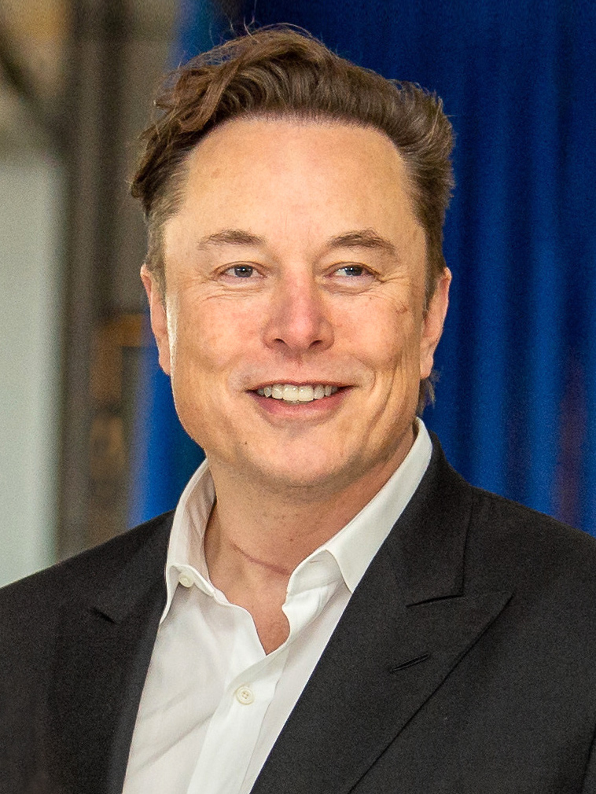

תעודת זהות
חברה מייצגת: xAI
תפקיד מרכזי: מייסד ודמות מובילה
תחום: מודלי שפה, פלטפורמות מידע, יזמות טכנולוגית
Technology Founder

יזם טכנולוגי המזוהה עם מספר חברות גדולות, ובתחום ה־AI עם הקמת xAI ועם הדיון הציבורי סביב עתיד הבינה המלאכותית.
חברה מייצגת: xAI
תפקיד מרכזי: מייסד ודמות מובילה
תחום: מודלי שפה, פלטפורמות מידע, יזמות טכנולוגית
מאסק מייצג את החיבור בין AI, רשתות חברתיות, תשתיות מחשוב וחזון טכנולוגי רחב על עתיד האדם והמכונה.